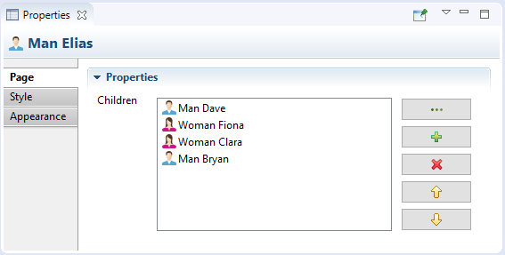
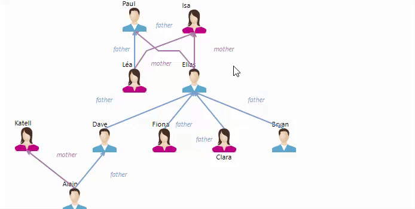
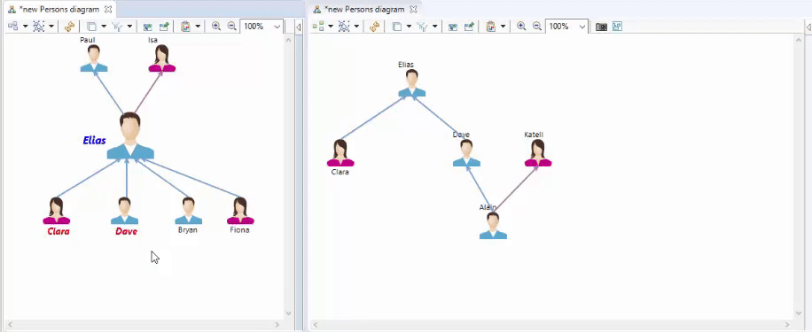
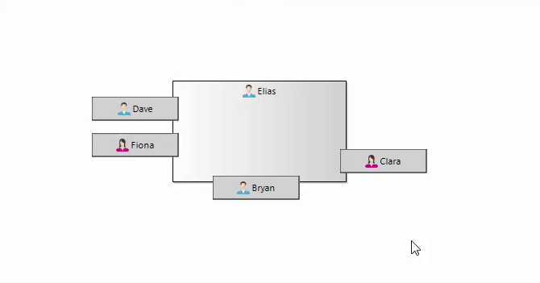
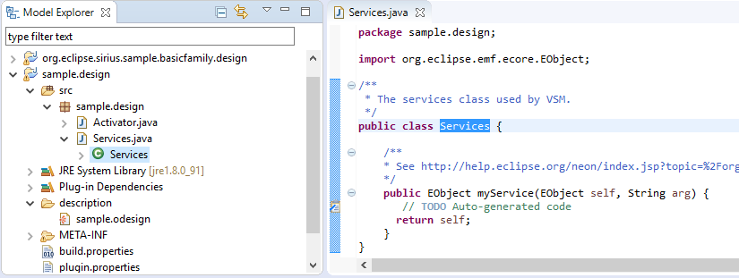

What is making Eclipse Sirius so unique? That’s its capability to easily create custom graphical modeling tools adapted to each specific need.
With Sirius 4.1, custom Properties Views come out of the experimental box and get promoted as an official production-ready feature. As usual, this new release also comes with several UX improvements on diagrams.
Arrived with Sirius 4.0 as an experimental feature, this integrated way to define your own properties views is now mature and ready for an usage in production.
First, we have improved the default properties views which are provided by Eclipse Sirius, even if you didn’t specify any custom view. After tests on many different metamodels, this new version correctly supports the main cases, so that now you have nice properties views for free on your existing modeling tools built with Sirius.
Most of all, these default properties views can be inlined into the specification of your modeling tool, so that you can modify them.
In addition, new features have been added for the customization.
The most notable one is the new Reference widget which allows the user to see the relations of an object in a pre-built list coming with five buttons to manage the elements (browse, new, delete, up and down).

As you can see, now it is possible to hide the legacy tabs (the Default and Semantic tabs automatically generated by EMF).
Like each version of Sirius, 4.1 brings many graphical improvements that simplify the user’s experience.
When the user selects an edge, the labels are automatically selected and a link is shown between them. On large diagrams containing many elements, this new feature (available by selecting an option in the preferences) allows the user to more easily identify which label corresponds to which link.

The existing copy/paste layout option has been extended to allow the user to also paste the graphical style of the selected objects.
Now, with Sirius 4.1, after the user has copied the format of diagram elements, he can choose to paste only the layout (size and position, as it was already possible with Sirius 4.0), to paste only the graphical style (font, color, …) or to paste both. Note that this option only applies to the same semantic elements.

The Snap to Shape option is now available also on border nodes. It means that Sirius displays guide to the user to facilitate the alignment of border nodes relatively to each other.

Before Sirius 4.1, some issues could occur when users were trying to load a modeling project into a modeling tool of which version was older than the one used to create the model.
Now this kind of operation is forbidden: users can only load modeling projects with a tool whose version is the same or is more recent (in this case Sirius automatically performs a migration).
To facilitate the creation of new services, when you create a new Viewpoint Specification Project, by default an empty service class is automatically created and pre-registered, ready to host your Java methods!

Just download this new version, try it right now and share your experience / give us your feedback on Eclipse Sirius Community Forum!
This is just an overview of the most visible changes. The full list is detailed here: http://www.eclipse.org/sirius/doc/Release_Notes.html.
To see new and noteworthy features of previous version, read What's new in Sirius 4.0.